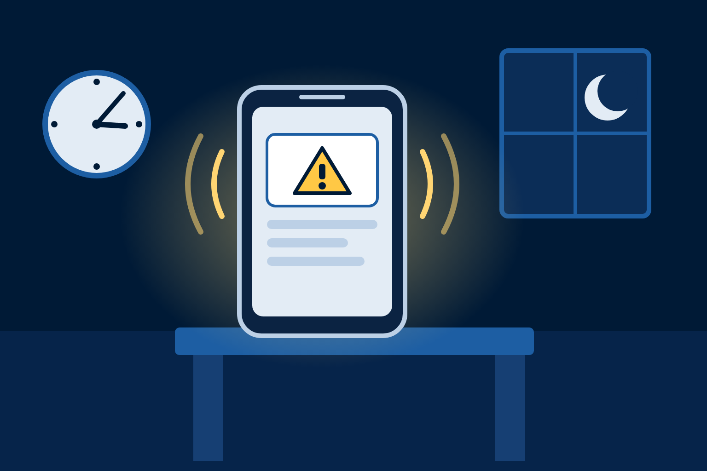
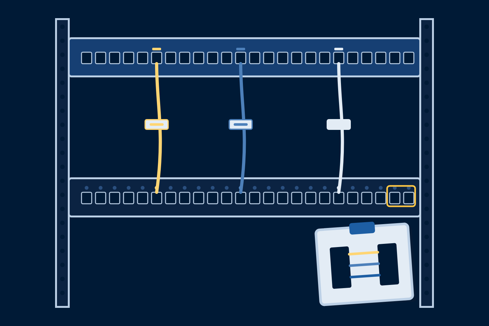
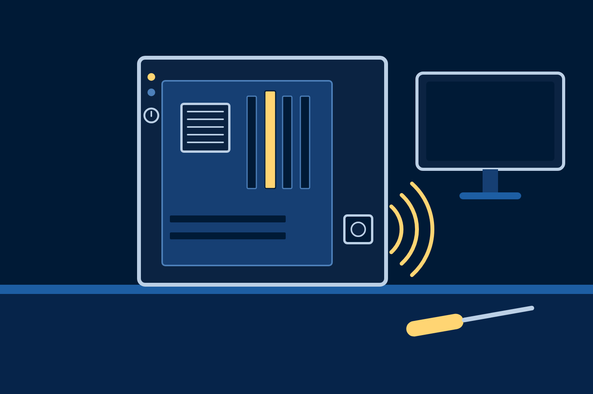

Chapter 7 · 7.2 companion · 25 minutes
UX beyond the web
Every IT job ships an interface. Most of them are not web pages.
Every IT job ships an interface. Most of them are not web pages.
Does the first line say what broke, where, and what to do first? That is UX. Nobody on the team calls it that.

01RecognizeFind the interface in a job that never says the word UX.
02SortPlace one decision in the UX layer or the UI layer.
03ScoreHold it against the five principles and name the one that fails first.
UUsabilityTasks finish without guesswork.The alert says what to do first.
AAccessibilityWorks with a screen reader and a keyboard.Works one-handed, on a phone, in the dark, over a slow link.
CConsistencySame nav in the same place on every page.The rack label matches the diagram and the port.
FFeedbackThe link answers the pointer and the Tab key.The command confirms what it did, or what it would do.
RResponsivenessThe layout fits the screen the visitor brought.The tool fits the device the user has in hand right now.
usabilityA rule nobody can follow lands on a sticky note.
feedbackThe MFA prompt shows where the sign-in came from.
usabilityOne Report Phishing button beats a mailbox address.
consistencyUplinks on ports 47 and 48 in every closet, every time.
consistencyCable, port, and diagram carry the same label.
feedbackThe switch marks the exact spot the command went wrong.
responsivenessThe guest portal works on whatever phone walks in.

six more required fields
fights usability
Ticket #48213 received. First reply within 4 business hours.
serves usability · feedback
Answers before it acts
PS C:\builds> Remove-Item .\night-build -Recurse -WhatIf What if: Performing the operation "Remove Directory" on target "C:\builds\night-build".
Answers with silence
$ rm -rf night-build/ (nothing) $
Feedback: the tool answers before the damage, not after.

feedbackOne short beep: self-test passed. A pattern: which part failed.
accessibilityA card reader mounted too high fails a wheelchair user.
consistencyPower light, disk light, same spot on every machine in the lab.
cust_dt_1→signup_dateUsability: read it without a decoder.
flag2→is_activeUsability: the name says what true means.
tbl_x→ordersConsistency: one naming rule across every table.
Forty tiles on a dashboard fail usability the same way forty links on a page do.
Good UX is a security control and an uptime control.
Pairs, 3 minutes: name your field, one interface a human operates there that is not a web page, the principle it fails first, and one fix.
Exit ticket: the first interface you expect to ship in that field, and the principle it most needs.
Next: Skills Lab 7.6 audits the club site with the same five questions.